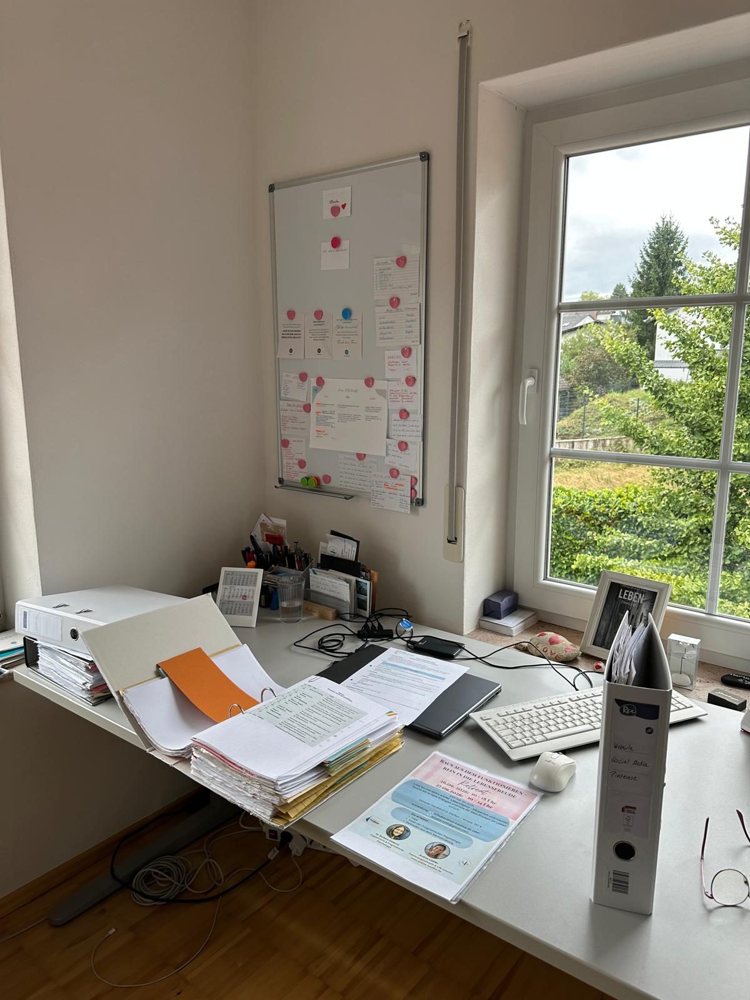

Mein Schreibtisch sah lange aus wie das Sinnbild meines Kopfes: Zettel auf Zettel, Notizen „für später", ein Stapel Papierkram, den ich schon wochenlang vor mir herschob. Kennst du das – dieses Gefühl, dass sich draußen türmt, was du innen längst nicht mehr sortiert bekommst?
In den letzten Wochen habe ich mein Büro aufgeräumt. Nicht, weil ich es mir vorgenommen hatte, mit Plan und Checkliste, wie man das aus so vielen Ratgebern kennt. Ehrlich gesagt ist es einfach passiert, während ich gerade etwas ganz anderes tat – nämlich mein Kurssystem umzustrukturieren.
Ich habe dabei etwas gemerkt, das ich dir in diesem Artikel erzählen möchte: Aufräumen hat für mich wenig mit Ordnung zu tun und sehr viel mit dem Loslassen alter Muster. Es beginnt im Außen, an einem Stapel Papier oder einem vollen Regal – aber was dabei eigentlich passiert, spielt sich im Kopf ab.
Das erwartet dich in diesem Artikel
Wie alles anfing: mein Chaos im Büro
Schon als Jugendliche wollte ich mein Zimmer immer aufgeräumt haben. Nicht, weil meine Eltern das verlangten, sondern weil es mich beruhigte, mich innerlich sortierte und einen schönen Blick in mein Zimmer bot. Ich wusste, wo meine Sachen waren, und das ließ mich klarer denken. Diese Verbindung zwischen äußerer Ordnung und innerer Klarheit begleitet mich mein ganzes Leben – nun wurde sie mir mal wieder richtig bewusst.
Im Erwachsenenleben, im Business, im Alltag mit all seinen Terminen ist wenig Raum für die Frage, ob mich mein Umfeld eigentlich beruhigt oder eher zusätzlich anspannt. Man funktioniert – arbeitet sich durch die Listen. Bis irgendwann etwas anderes übernimmt.
Im Moment strukturiere ich einige Dinge in meinem Business um, ganz aktuell mein Kurssystem. Genau in dieser Phase habe ich Stück für Stück mein bis dahin ziemlich unordentliches Büro aufgeräumt: aussortiert, weggeheftet, Stapel für Stapel abgebaut. Ohne mir das vorzunehmen. Es kam einfach aus mir raus.
Wenn ich zurückblicke, kann ich nur sagen: Es hat geordnet und strukturiert. Und dieses „es" bin natürlich ich selbst, auch wenn es sich in dem Moment angefühlt hat, als würde etwas durch mich hindurch aufräumen. Kein Masterplan, keine Farb- oder Kategorien-Systematik – einfach ein Griff nach dem nächsten Stapel, ohne groß darüber nachzudenken.
Rückblickend ergibt das für mich einen Sinn. Wenn eine berufliche Neuausrichtung ansteht, will offenbar auch der Raum um mich herum mitziehen. Wenn du magst, findest du in meinem letzten Artikel „Dranbleiben ist keine Disziplin, sondern Selbstliebe" mehr darüber, wie ich mit genau solchen unbewussten Prozessen inzwischen arbeite, statt gegen sie anzukämpfen.
Aufräumen ist kein Ordnungssystem, sondern das Loslassen alter Muster
Die meisten Ratgeber erklären dir ein System: erst diese Kategorie, dann jene, alles nach Farbe oder Größe. Für mich war es umgekehrt. Ich habe kein System angewendet, sondern etwas Liegengebliebenes einfach erledigt oder es losgelassen, weil es mich in diesem Moment nicht mehr weiterbrachte.
Aufräumen ist für mich also kein Ordnungssystem, sondern ein Signal. Es zeigt mir, was wirklich zu mir gehört – und was ich mir nur auferlegt hatte, weil ich dachte, ich müsste es eben so machen.
Ich hatte lange das Gefühl, täglich unzählige Business-Aufgaben erledigen zu müssen, weil man das als Selbstständige eben so macht. Social Media war so eine Aufgabe. Ich habe mir Content aus den Fingern gesogen und ihn dann krampfhaft präsentiert, wo andere in Sekunden drüberscrollen.
Natürlich hat jeder Job Aufgaben, die man weniger gerne macht – das ist mir bewusst, und ich will hier niemandem erzählen, dass sich alles im Leben leicht anfühlen muss. Aber dieses Sich-Verrenken für ein Format, das nicht zu mir passte, war etwas anderes. Je öfter ich diese Aufgabe liegen ließ und scheinbar Wichtigeres vorzog, desto klarer wurde mir: Es war nicht meins. Es passte nicht zu mir.
Also habe ich es losgelassen – und genau das war ein Stück Ordnung im Kopf, lange bevor ich überhaupt einen Stapel Papier angefasst hatte. Das äußere Aufräumen kam erst danach, fast wie eine Bestätigung von dem, was innerlich schon entschieden war.
Was Aufräumen wirklich mit deinem Kopf macht
Für mich bringt Aufräumen Stück für Stück Klarheit in den Kopf – das ist wirklich so. Dinge und Aufgaben, die ich mir auferlegt habe, erledigen sich entweder, weil ich sie loslasse, oder sie bekommen Struktur, und ich weiß plötzlich den nächsten Schritt.
Dabei geht es um mehr als Papierkram. Ich verstehe durch diesen Prozess, was wirklich wichtig für mich ist und was ich mir künstlich auferlegt habe. Aufräumen ist für mich also nicht nur räumliche Arbeit im Außen – dabei passiert ganz viel Ordnung im Inneren.
Vielleicht kennst du das Gefühl, wenn ein voller Schrank oder ein überladener Schreibtisch dich schon beim Betreten des Raums müde macht, bevor du überhaupt angefangen hast zu arbeiten. Genau das meine ich: Dein Nervensystem reagiert auf das, was dich umgibt – ob du dir dessen bewusst bist oder nicht. Ein aufgeräumter Raum ist kein ästhetisches Extra, sondern ein Signal an dich selbst, dass gerade Ruhe möglich ist.
Ich wünsche dir, dass du diesen Unterschied selbst spürst: zwischen einer Aufgabe, die du dir irgendwann übergestülpt hast, und einer, die tatsächlich zu dir gehört. Der eine Stapel fühlt sich schwer an, du schiebst ihn wochenlang vor dir her. Der andere geht dir leicht von der Hand, kaum dass du ihn angefasst hast.
So fängst du an: kleine Schritte statt Alles-oder-nichts
Fang mit einer Kleinigkeit an. Überleg nicht lange, ob du gerade Lust hast – mach einfach eine kleine Sache am ersten Tag. Ein Fach, eine Schublade, ein einziger Stapel. Das tut gut und macht zufriedener, mehr braucht es nicht als Startpunkt.

Dieses positive Gefühl spornt dich für die nächste kleine Aufgabe an, den nächsten kleinen Stapel, die nächste Ablage. Der Raum wird größer, dein Sichtfeld weitet sich, und das Gesamtbild wird ruhiger. Du musst dabei nicht wissen, wo genau du am Ende landest – das ergibt sich beim Tun.
Wichtig sind kleine Pausen dazwischen. Arbeite dich nicht durch, bis ein Zimmer oder ein Büro blitzblank ist – freu dich stattdessen über jedes Zwischenergebnis. So kann der Prozess wirklich Spaß machen, statt dich zu überfordern und dich am Ende erschöpfter zurückzulassen, als du vorher warst.
Wenn du magst, nimm dir zum Einstieg diese drei Fragen mit:
- Welcher eine Stapel, welche eine Schublade fällt dir sofort ein, wenn du an „das müsste ich mal" denkst?
- Was davon erledigt sich in fünf Minuten, ohne große Entscheidung?
- Wo merkst du beim Anschauen schon: Das ist es eigentlich gar nicht wert, dass ich es aufhebe?
Nicht alles auf einmal. Ein Stapel nach dem anderen.
Was mir mehr Klarheit über meine Kund:innen verraten hat
Je klarer mein Büro wurde, desto klarer wurde auch etwas anderes über mein Business. Schon lange hatte ich den Wunsch und die Ideen rund um eine Mitgliedschaft in meinem Kopf. Beim Aufräumen und Sortieren ist mir immer klarer geworden, warum.
Ich dachte lange Zeit, ich brauche möglichst viele Teilnehmer. Ich wollte unbedingt möglichst vielen Menschen helfen, beweglicher und entspannter zu werden und ihre Beschwerden lindern. Ich wollte ihnen zeigen, was sie tun können, um selbstwirksamer zu werden.
Mir wurde immer klarer, dass mein Faszienyoga speziell ist und hauptsächlich für Menschen, die wirklich an sich arbeiten möchten. Dazu gehört schon eine ganze Menge Selbstverantwortung meiner Kund*innen. Das kann und will nicht jede*r.
Stück für Stück wurde mir klarer, dass ich keine riesigen Yoga-Kurse brauche mit möglichst vielen Kund:innen. Ich möchte die richtigen Menschen in meinen Kursen, die zu mir passen, zu meinen Werten, und die auch untereinander harmonieren – in einer ruhigen und friedlichen Atmosphäre.
Wir leben in einer Zeit, in der viele Menschen auf Social Media tausende Follower:innen haben und sich trotzdem allein fühlen. Anonymität lässt sich beliebig skalieren, echte Verbindung nicht. Genau deshalb ist mir eine Gemeinschaft wichtiger geworden als Reichweite: Menschen, die sich wirklich sehen, statt nur nebeneinander zu existieren. Das lässt sich nicht mit hohen Teilnehmer:innenzahlen erkaufen, sondern nur mit der richtigen Passung.
Also frage ich mich seitdem bei jeder Entscheidung: Passt das zu mir – und passt es zu den Menschen, die ich in meinen Kursen um mich habe? Menschen, die zu mir passen, zu meinen Werten, und die sich auch untereinander in der Community verstehen. Wie genau ich das in Zukunft noch stärker abbilden möchte, dazu habe ich einige Ideen im Kopf. Darüber schreibe ich aber ein andermal mehr.
Das ist keine kleine Erkenntnis für ein Business, das lange auf Wachstum getrimmt war. „Mehr Teilnehmer:innen, mehr Reichweite, mehr …" – diese Vision hatte ich lange verinnerlicht, ohne sie infrage zu stellen. Erst durch die Klarheit, die mir das Aufräumen gebracht hat, habe ich gemerkt, dass „mehr" für mich gar nicht (mehr) das Ziel ist.
Deshalb habe ich mich entschieden, meine Yoga-Kurse auf eine Mitgliedschaft umzustellen. Für Menschen, die empathisch, wertschätzend und respektvoll miteinander umgehen. Das können wir in der heutigen Zeit mehr denn je gebrauchen: nicht Anonymität und Unverbindlichkeit, sondern eine Gemeinschaft, die sich trägt.
Wenn ich mehr Klarheit in mir habe, sende ich mehr Klarheit nach außen.
Und automatisch kommen die richtigen Menschen auf mich zu, die zu mir und gleichzeitig zu meinen Gruppen passen.
Das macht mir so viel mehr Spaß, Yoga zu geben – und ich habe das Gefühl, meine Teilnehmer:innen merken das auch. Wenn ich vor einer Gruppe stehe, die sich gegenseitig trägt, statt nur nebeneinander auf der Matte zu liegen, spüre ich eine ganz andere Energie im Raum als zuvor, als ich versucht habe, es allen recht zu machen.
Fazit
Aufräumen ist für mich kein To-do, das ich abhake, sondern ein Weg zu innerer Klarheit. Jeder Stapel, den ich loslasse, jede Aufgabe, die ich sortiere, bringt mich näher an das heran, was wirklich zu mir gehört – und schafft Platz für die Menschen und Projekte, die zu mir passen.
Man muss dafür nicht ein ganzes Büro auf den Kopf stellen. Es reicht, mit einer einzigen Schublade anzufangen und zu beobachten, was sich dabei innerlich bewegt. Nicht von heute auf morgen – das kann ganz langsam geschehen. Es ist ein Prozess. Vielleicht ist es gar nicht die Unordnung im Raum, die uns müde macht, sondern das, wofür sie steht.
Ordnung im Außen schafft Klarheit im Inneren.